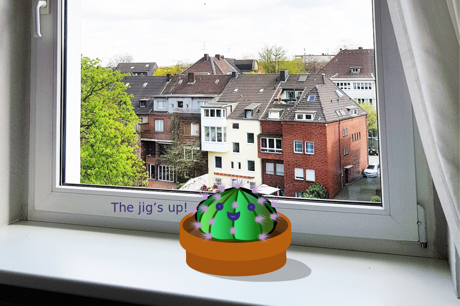

Home| Photoshop| Illustrator| Animate| InDesign| Contact

Illustrator was not as intuitive for me personally, but I appreciate the power it has and the elegance of the features like the Bezier handle. Illustrator makes it so easy to create polished work.